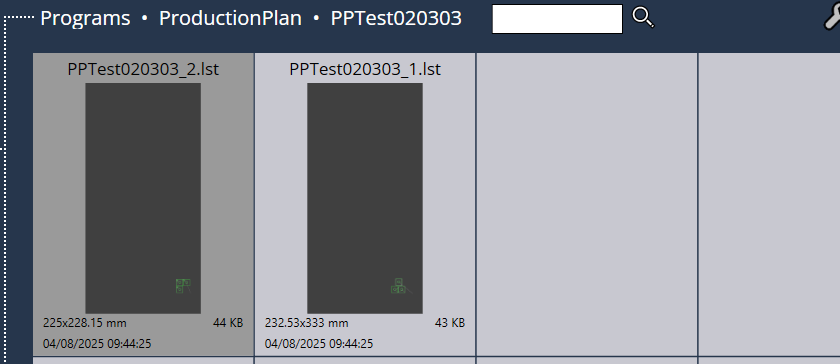
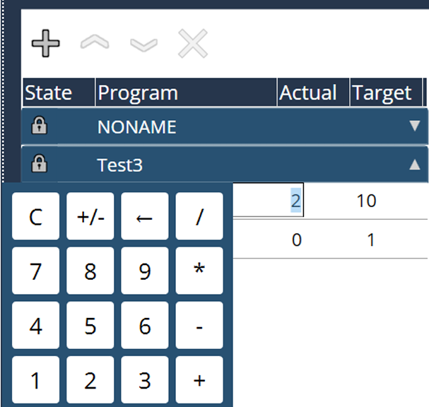

Flux de travail
1. Ajouter des packs de plan de production
Lorsque la machine est prête pour la production, appuyez sur le bouton « + » pour ajouter les programmes de production planifiés à la liste de plan de production.

Lors de la procédure d’ajout, les packs de plan de production seront également enregistrés dans le chemin du disque local.

Tous les packs de plan de production importés sont enregistrés dans le dossier Plan de production.

Chaque pack de plan de production crée un dossier individuel, afin de stocker les sous-tâches, ces dernières peuvent être chargées directement dans le cas d’un usinage à tâche unitaire.

2. Ajuster la quantité si nécessaire
La quantité cible de la sous-tâche est tirée de la programmation hors ligne et peut également être modifiée sur la machine lorsque le plan de production n’est pas en mode exécution. Pour modifier les quantités Réelles et Cibles, un clavier numérique s’affiche :

3. Déverrouiller le plan de production
Sélectionnez le pack planifié qui doit être usiné, appuyez sur le symbole « Verrouiller » pour déverrouiller ce pack de plan de production.

4. Exécuter le plan de production
Appuyez sur le bouton « DÉMARRER » pour exécuter le plan de production. La fenêtre « Validation du statut article » s’affiche pour la confirmation. Vérifiez l’état réel et appuyez sur « √ » pour continuer. L’échange de palettes sera exécuté en conséquence et l’usinage se lance.